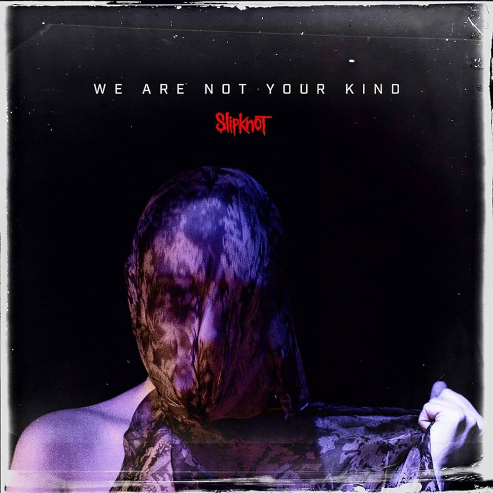
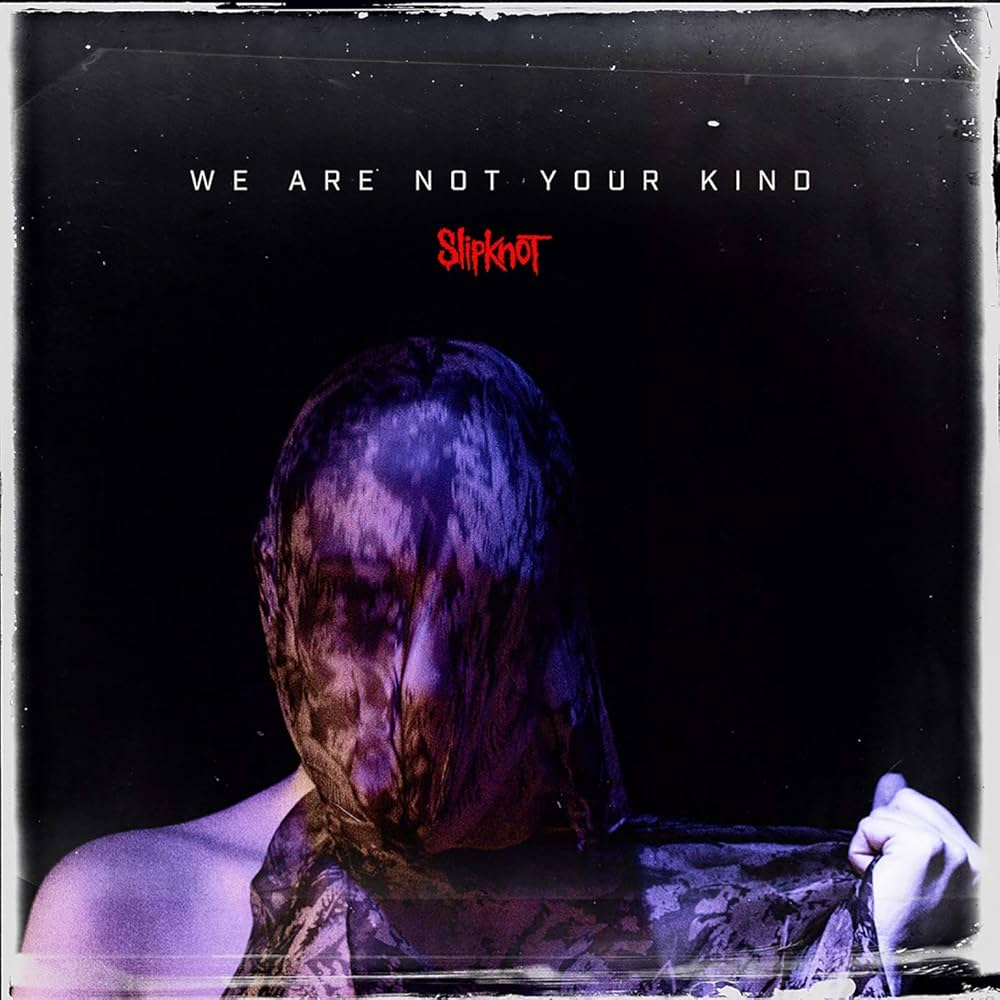

Дискография группы
Slipknot объявили даты своего европейского тура в 2025 году к 25-летию своего культового альбома. Тур охватит несколько стран
Slipknot объявили даты своего европейского тура в 2025 году к 25-летию своего культового альбома. Тур охватит несколько стран
 
